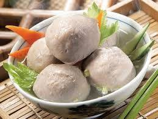
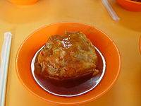
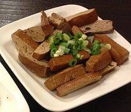
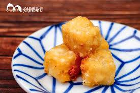

新竹貢丸
- 摃丸（臺灣話：摃丸，白話字：kòng oân；客語白話字：kung yèn）俗寫白字貢丸，為豬肉製做的一種肉丸，在台灣、香港、澳門、中國大陸南部的福建，廣東等地都有此食品。台灣以新竹出產的最為知名，廣東和香港等地亦非常普遍。
- 新竹的貢丸特別有名，嚴格來說，貢丸到處都有人會做，也非新竹一帶的豬肉特別鮮美。新竹對貢丸的貢獻，主要是科技上的：運用機器，令貢丸可大量生產。新竹的貢丸是以木棒或機器「摃（槌擊肉塊）」出來的。而新竹貢丸的材料必須用剛宰殺不久的新鮮溫體豬肉製作，也就是所謂的「活肉」。

淡水阿給
- 淡水阿給，是台灣新北市淡水區的知名小吃。阿給的做法是將油豆腐的中間挖空，然後填充炒過的冬粉（有些店家使用的是沒有炒過的冬粉）、浸泡過滷汁，以魚漿封口，加以蒸熟，食用前淋上甜辣醬或其他特殊醬汁。
- 阿給的由來，是源自1965年受日本教育的楊鄭錦文女士從日本油豆腐（あげ age）包食物而衍生發明，起初是為了不想浪費賣剩下的食材，而想出的特殊料理方式，創始店位於淡水區真理街上。

桃園大溪豆乾
豆乾亦稱豆腐乾，是魯菜、川菜、粵菜、蘇菜與台灣料理中常見的食材。豆乾由豆腐經過脫水、壓縮製成。常見的豆乾有白豆乾、五香豆乾兩類。烹飪方法以涼拌、炒、滷、炸較為常見。

宜蘭糕渣
糕渣（臺灣話：ko-tsa）是臺灣宜蘭著名小吃，是油炸菜餚，曾經在中華民國總統府招待外賓；外冷內熱燙汁，需小口品嚐。在宜蘭羅東夜市裡面可以購買到。宜蘭的糕渣應該與香港的戈渣或炸鮮奶為相近似的食品。
